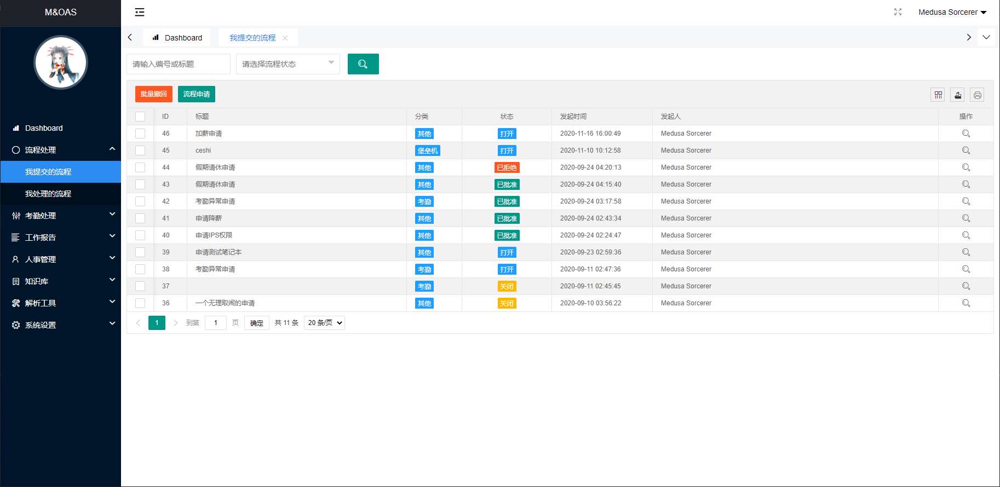
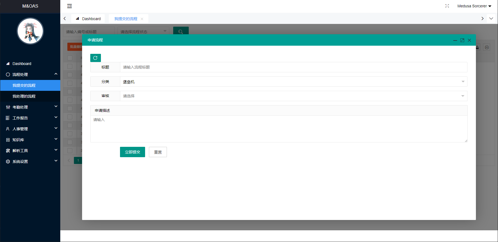
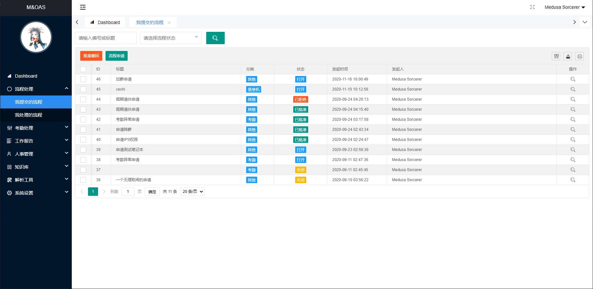
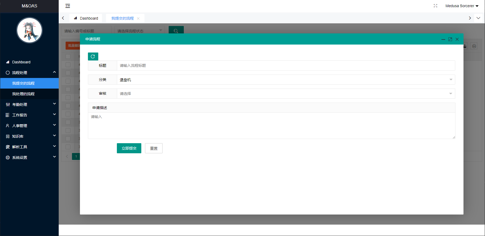

M&OAS 我提交的流程
该界面是提供我已提交的流程列表查询，包含了流程查询、撤回操作，并查询相关的审批记录。
检索框可以检索数据 ID 或者流程标题，以及流程状态。
你可以自定义对流程类型进行声明，你需要修改模型类 ProcessModel 的相关数据，并确保相关属性可用，推荐你使用追加的方式，而不是修改。



该界面是提供我已提交的流程列表查询，包含了流程查询、撤回操作，并查询相关的审批记录。
检索框可以检索数据 ID 或者流程标题，以及流程状态。
你可以自定义对流程类型进行声明，你需要修改模型类 ProcessModel 的相关数据，并确保相关属性可用，推荐你使用追加的方式，而不是修改。


From here you can search these documents. Enter your search terms below.
| Keys | Action |
|---|---|
| ? | Open this help |
| n | Next page |
| p | Previous page |
| s | Search |